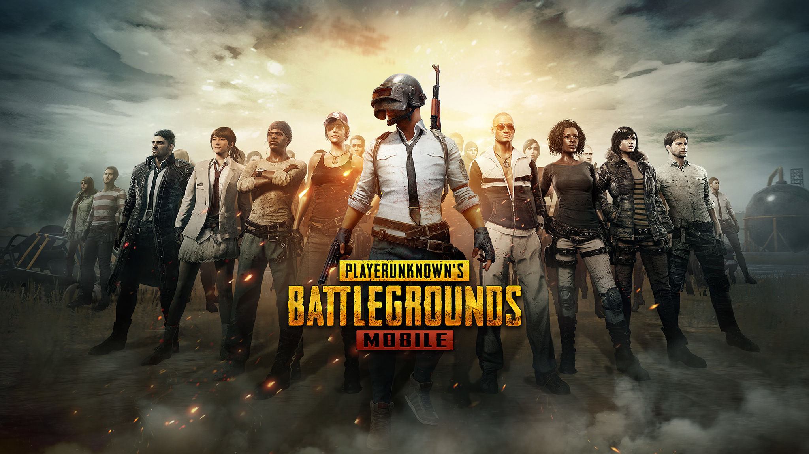
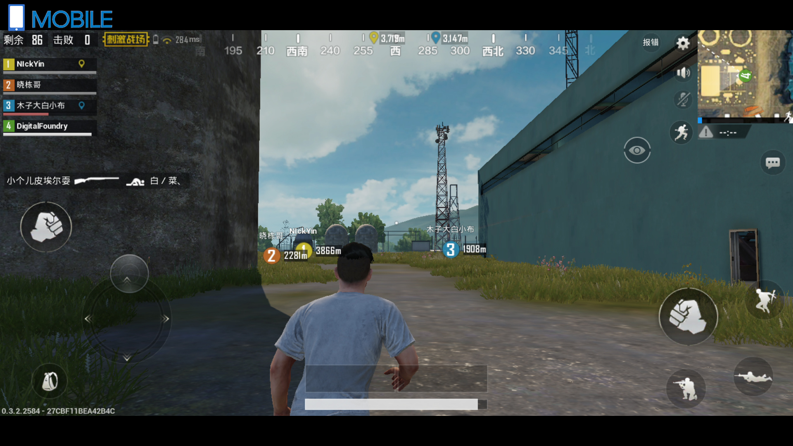

PlayerUnknown's Battlegrounds (PUBG) is a 2017 online multiplayer battle royale game developed and published by PUBG Corporation, a subsidiary of South Korean video game company Bluehole. The game is based on previous mods that were created by Brendan "PlayerUnknown" Greene for other games, inspired by the 2000 Japanese film Battle Royale, and expanded into a standalone game under Greene's creative direction. In the game, up to one hundred players parachute onto an island and scavenge for weapons and equipment to kill others while avoiding getting killed themselves. The available safe area of the game's map decreases in size over time, directing surviving players into tighter areas to force encounters. The last player or team standing wins the round.
Battlegrounds was first released for Microsoft Windows via Steam's early access beta program in March 2017, with a full release on December 20, 2017. That same month, the game was released by Microsoft Studios for the Xbox One via its Xbox Game Preview program, and officially released in September 2018. The same year, a free-to-play mobile version for Android and iOS was released, in addition to a port for the PlayStation 4. The game is one of the best-selling video games of all time, selling over fifty million copies worldwide by June 2018. In addition, when including its free-to-play mobile version, the game has over 400 million total players, which also makes it one of the most-played video games overall.
Battlegrounds received positive reviews from critics, who found that while the game still was not fully finished and had some technical flaws, it presented new types of gameplay that could be easily approached by players of any skill level and was highly replayable. The game received several Game of the Year nominations among other accolades, and is considered by Greene to be the defining game of the battle royale genre. Several other video games, following in Battlegrounds's success, added battle royale-style modes, while a number of clones, primarily out of China, also appeared. PUBG Corporation has run several small tournaments and introduced in-game tools to help with broadcasting the game to spectators, as they wish for it to become a popular esport.
Gameplay:
Battlegrounds is a player versus player shooter game in which up to one hundred players fight in a battle royale, a type of large-scale last man standing deathmatch where players fight to remain the last alive. Players can choose to enter the match solo, duo, or with a small team of up to four people. The last person or team alive wins the match.[1]

Each match starts with players parachuting from a plane onto one of the four maps, with areas of approximately 8 × 8 kilometres (5.0 × 5.0 mi), 6 × 6 kilometres (3.7 × 3.7 mi), and 4 × 4 kilometres (2.5 × 2.5 mi) in size.[2] The plane's flight path across the map varies with each round, requiring players to quickly determine the best time to eject and parachute to the ground.[1] Players start with no gear beyond customized clothing selections which do not affect gameplay. Once they land, players can search buildings, ghost towns and other sites to find weapons, vehicles, armor, and other equipment. These items are procedurally distributed throughout the map at the start of a match, with certain high-risk zones typically having better equipment.[1] Killed players can be looted to acquire their gear as well.[1] Players can opt to play either from the first-person or third-person perspective, each having their own advantages and disadvantages in combat and situational awareness; though server-specific settings can be used to force all players into one perspective to eliminate some advantages.[1][3]
Every few minutes, the playable area of the map begins to shrink down towards a random location, with any player caught outside the safe area taking damage incrementally, and eventually being eliminated if the safe zone is not entered in time; in game, the players see the boundary as a shimmering blue wall that contracts over time.[4] This results in a more confined map, in turn increasing the chances of encounters.[1] During the course of the match, random regions of the map are highlighted in red and bombed, posing a threat to players who remain in that area.[5] In both cases, players are warned a few minutes before these events, giving them time to relocate to safety.[6] At random, a plane will fly over various parts of the playable map and drop a loot package, containing items which are typically unobtainable during normal gameplay. These packages emit highly visible red smoke, drawing interested players near it and creating further confrontations.[1] On average, a full round takes no more than 30 minutes.[6]
At the completion of each round, players gain in-game currency based on their performance. The currency is used to purchase crates which contain cosmetic items for character or weapon customization.[7] A rotating "event mode" was added to the game around March 2018. These events change up the normal game rules, such as establishing larger teams or squads, or altering the distribution of weapons and armor across the game map.[8]
click here to go to top
 Sign Up with Facebook
Sign Up with Facebook